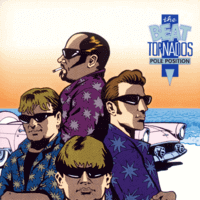

the Beat Tornados - Pole Position (MiniAlbum, 1998)
01 - Oppå Fjellet (2:05)
02 - Throttleman (2:02)
03 - Pole Position (2:31)
04 - El Nino (3:47)
05 - Kon Tiki (2:09)
06 - Piken I Dalen (2:48)
07 - Reinlender (1:50)
08 - The Cruel Sea (2:42)
© Amigo :: [AMNCD 3002]
Notes
Oslo, Norway.
Bjørn Haglund - Lead Guitar
Jørn Raknes - Rhythm guitar, Lapsteel
Jussi Twist - Drums, Percussion
Geir Emanuelsen - Bass guitar
Vidar I. Ersfjord - Electronic space effects
Billy King - Munnharpe
reference information: Discogs®
Review
140/366 (Project 366)
The Beat Tornados with a rather original style, however it fits nicely into the genre as such. An interesting sound of Surf music with tides from traditional and folk tunes.
Frisky start with the traditional Norwegian song "Oppå Fjellet" in the surf instrumental version and self-penned song "Throttleman". Both are twang-o-fuzzy and tidal! Classy and fancy. Second track even with space-a-delic effects. But then there is a wonderful transition to the third composition "Pole Position" (very smooth, very cool) and the breakthrough power of the instrumental surfin', rockin' and rollin' begins. Catchy tune with rough background. Сontinuous pleasure and flight into a twist hurricane "El Nino". Where a rather soft, but very persistent melody with a rugged ending. Something between stormy rautalanka and surfing stomp. Then comes a very melodious lull "Kon Tiki". Steel guitar is very suitable and novel in this song. The sixth track "Piken I Dalen" is another traditional composition. Sounds as twisting instrumental surf with folk-rock base. It creates a very kind atmosphere and good mood. Even a little rocking one due to the unusual performance. The seventh track "Reinlender" is also a traditional tune. Very Norwegian appearance, actually. Sounds as instrumental Folk-Rock with Surf pepper. The used munnharpe is so remarkable there! Although it probably makes such a little silly mood and a bit fairy sound. The album ends with a cover version of the song "The Cruel Sea". Groovy perhaps.
All in all, the mini-album contains an amazing variety of both sound and mood. At the same time, it maintains a single wave and harmony. I liked how intensively the instruments sound, it does not bother at all, although quite loudly. This was their first album and it already contained a good blend of styles and musicality. Their subsequent work contains much more interesting moves, fancy points, clearer and harder forms, strengths and efforts. But I think these debut recordings are quite special and very interesting.